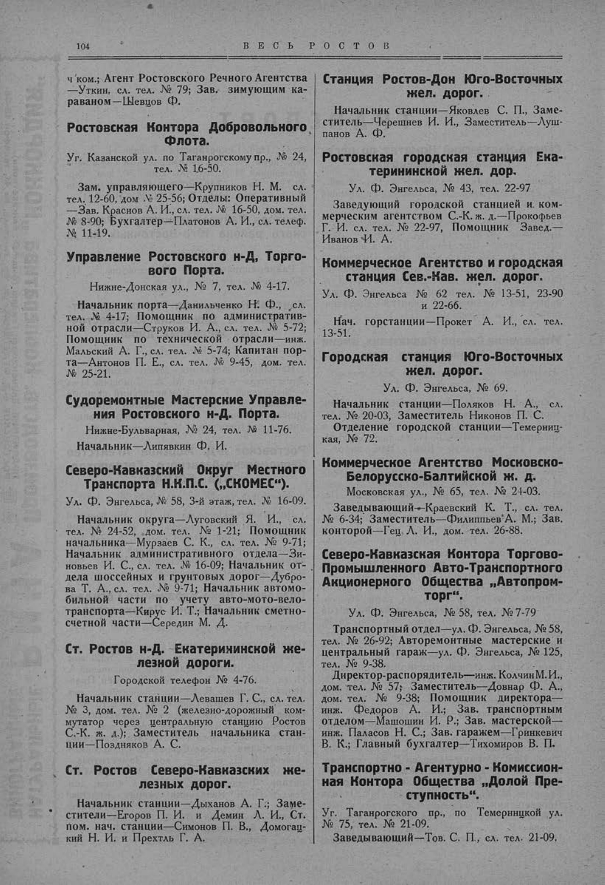

Лист источника 154
Скан

Распознанный текст
104 В Е С Ь Р О С Т О В
ч'ком.; Агент Ростовского Речного Агентства
—Уткин, сл. тел. № 79; Зав. зимующим ка-
раваном—Шевцов Ф.
Ростовская Контора Добровольного
Флота.
Уг. Казанской ул. по Таганрогскому пр., № 24,
тел. № 16-50.
Зам. управляющего—Крупников Н. М. сл.
тел. 12-60, дом. № 25-56; Отделы: Оперативный
—Зав. Краснов А. И., сл. тел. № 16-50, дом. тел.
№ 8-90; Бухгалтер—Платонов А. И., сл. телеф.
№ 11-19.
Управление Ростовского н-Д, Торго-
вого Порта.
Нижне-Донская ул., № 7, тел. № 4-17.
Начальник порта—Данильченко Н. Ф., сл.
тел. № 4-17; Помощник по административ-
ной отрасли—Струков И. А., сл. тел. № 5-72;
Помощник по технической отрасли—инж.
Мальский А. Г., сл. тел. № 5-74; Капитан пор-
та—Антонов П. Е., сл. тел. № 9-45, дом. тел.
№ 25-21.
Судоремонтные Мастерские Управле-
ния Ростовского н-Д. Порта.
Нижне-Бульварная, № 24, тел. № 11-76.
Начальник—Липавкин Ф. И.
Северо-Кавказский Округ Местного
Транспорта Н.К.П.С. („СКОМЕС“).
Ул. Ф. Энгельса, № 58, 3-й этаж, тел. № 16-09.
Начальник округа—Луговский Я. И., сл.
тел. № 24-52, дом. тел. № 1-21; Помощник
начальника—Мурзаев С. К., сл. тел. № 9-71;
Начальник административного отдела—Зи-
новьев И. С., сл. тел. № 16-09; Начальник от-
дела шоссейных и грунтовых дорог—Дубро-
ва Т. А., сл. тел. № 9-71; Начальник автомо-
бильной части по учету авто-мото-вело-
транспорта—Кирус И. Т.; Начальник сметно-
счетной части—Середин М. Д.
Ст. Ростов н-Д. Екатерининской же-
лезной дороги.
Городской телефон № 4-76.
Начальник станции—Левашев Г. С., сл. тел.
№ 3, дом. тел. № 2 (железно-дорожный ком-
мутатор через центральную станцию Ростов
С.-К. ж. д.); Заместитель начальника стан-
ции—Поздняков А. С.
Ст. Ростов Северо-Кавказских же-
лезных дорог.
Начальник станции—Дыханов А. Г.; Заме-
стители—Егоров П. И. и Демин Л. И., Ст.
пом. нач. станции—Симонов П. В., Домогац-
кий Н. И. и Прехтль Г. А.
Станция Ростов-Дон Юго-Восточных
жел. дорог.
Начальник станции—Яковлев С. П., Заме-
ститель—Черешнев И. И., Заместитель—Луш-
панов А. Ф.
Ростовская городская станция Ека-
терининской жел. дор.
Ул. Ф. Энгельса, № 43, тел. 22-97
Заведующий городской станцией и ком-
мерческим агентством С.-К. ж. д.—Прокофьев
Г. И. сл. тел. № 22-97, Помощник Завед.—
Иванов И. А.
Коммерческое Агентство и городская
станция Сев.-Кав. жел. дорог.
Ул. Ф. Энгельса № 62 тел. № 13-51, 23-90
и 22-66.
Нач. горстанции—Прокет А. И., сл. тел.
13-51.
Городская станция Юго-Восточных
жел. дорог.
Ул. Ф. Энгельса, № 69.
Начальник станции—Поляков Н. А., сл.
тел. № 20-03, Заместитель Никонов П. С.
Отделение городской станции—Темерниц-
кая, № 72.
Коммерческое Агентство Московско-
Белорусско-Балтийской ж. д.
Московская ул., № 65, тел. № 24-03.
Заведывающий—Краевский К. Т., сл. тел.
№ 6-34; Заместитель—Филиппьев А. М.; Зав.
конторой—Гец Л. И., дом. тел. 26-88.
Северо-Кавказская Контора Торгово-
Промышленного Авто-Транспортного
Акционерного Общества „Автопром-
торг“.
Ул. Ф. Энгельса, № 58, тел. № 7-79
Транспортный отдел—ул. Ф. Энгельса, № 58,
тел. № 26-92; Авторемонтные мастерские и
центральный гараж—ул. Ф. Энгельса, № 125,
тел. № 9-38.
Директор-распорядитель—инж. Колчин М. И.,
дом. тел. № 57; Заместитель—Довнар Ф. А.,
дом. тел. № 9-38; Помощник директора—
инж. Федоров А. И.; Зав. транспортным
отделом—Машошин И. Р.; Зав. мастерской—
инж. Паласов Н. С.; Зав. гаражем—Гринкевич
В. К.; Главный бухгалтер—Тихомиров В. П.
Транспортно - Агентурно - Комиссион-
ная Контора Общества „Долой Пре-
ступность“.
Уг. Таганрогского пр., по Темерницкой ул.
№ 75, тел. № 21-09.
Заведывающий—Тов. С. П., сл. тел. 21-09.